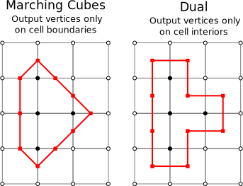
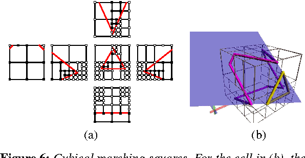
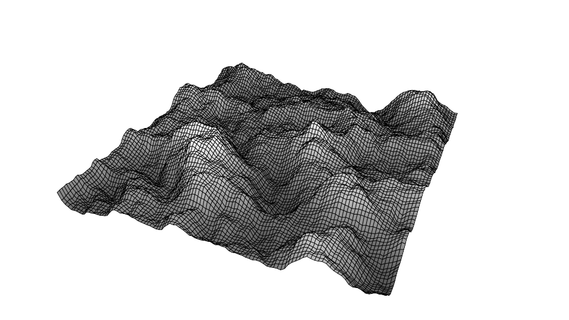

Console Programming Post 1 | Researching a Topic
Tyler Chapman, Jan, 27, 2020
Hello and welcome to my blog! Here you can follow my progress in development for a class at Champlain College called console programming. Our first task in the class is to find an area that interests us, research it, then create something over the course of the class. From my other blog posts relating to my senior production classes, I have posted about my work on the marching cubes (MC) algorithm. If you are unfamiliar, a basic description is it is an algorithm to terraform meshes in realtime by utilizing combinations of vertices points of a cube. As my implementation interested me quite a bit, I first thought of continuing and expanding my existing work. However, there is a conflict as I will already be working on my improving and adding to my implementation for one of my other classes.
Some footage of marching cubes

I could not work on MC, but I still wanted to find a subject that was related to voxel terrain editing because I found it quite fun to figure out. I then began researching topics relating to MC and algorithms that are similar to it. I first found dual contouring (DC), which fixes a lot of issues that arise with MC.
Example of hard edges DC can create
Firstly, MC is rather complicated to first rap your head around as there are 256 possible vertex combinations that can occur. DC removes this layer of complexity by having no lookup table. Another issue with MC is that when there are two opposing corners, there is no telling if the two cubes are meant to be connected or not. There are workarounds to fix this, but it is extra work outside of the base algorithm’s implementation. A final issue that arises with MC is that it is impossible to generate meshes with sharp edges nor corners. As DC seems to improve MC in many ways, I first thought that I wanted to attempt to recreate an implementation of it. I kept researching and found other papers discussing other algorithms that seemed to solve even more problems than DC can.
Cubical marching squares(CMS) is what I decided on looking into. While looking into it, I first decided to read the marching squares algorithm, which from its name should inform that it is a 2D algorithm, not 3D. It is similar to MC, except that instead of dealing with 8 vertices points, it simply deals with the 4 points of a square, and has fewer cases. Instead of dealing with the 256 total cases for MC, it drops the number down to only 15 total cases. It functions in a similar way, but is simpler to understand. Again, to oversimplify, the description of what CMS is that it unfolds the 3D cube shape into its individual faces, then runs the marching squares algorithm on each face, to then reassemble the object. Even though it is fairly difficult to implement a working version of this algorithm, the extra work pays off.
Firstly, similar to MC but unlike DC, CMS is parallel processing, meaning that the algorithm can run through multiple operations on a singular mesh concurrently. DC is unable to do this as the algorithm needs adjacent vertex data, so one cube might alter the data of another. The two MC based algorithms do not care about other cubes, only themselves as it is self-contained. As mentioned, DC is an improvement over MC as it is able to recreate hard edges. Where MC fails, CMS is able to match DC, in that it can recreate hard edges or sharp features. Having this characteristic allows for greater accuracy with recreating meshes and giving a more realistic look to them. As I previously mentioned, when simply dealing with vertex data, to assemble a mesh not knowing about other portions of that mesh can result in ambiguous renders. DC does a better job than MC as it deals with adjacent cubes, but CMS fixes inconsistent topology far better than either two other algorithms. Finally, CMS, along with DC, deals with mesh cracking, creating adaptive resolutions to possible issues when generating a mesh from vertex data.
Visual representation of CMS
Of the three algorithms I have mentioned, there are many implementations already in circulation of MC and DC, as the process to work with them is understood quite universally. What I mean by this, is that the algorithms have been around for quite some time, giving time for more information about them to be published. As for CMS, there are only a few video examples and research papers explaining the process. CMS is somewhat of a black box as my entire implementation will have to rely on how I interpret explanations of the papers I can find. As a programmer, this would show that I can recreate a solution to a complex problem with scarce information for solving it. If I am able to get the algorithm to run at a high consistent frame rate, it would show that I can architecture code well as if it is improperly implemented, there is a good chance that it will tank many computers. As my base goal is to simply implement the algorithm, I have quite a few stretch goals as well.
If I am able to successfully implement CMS, I also want to look into the Unity job system and burst compilation to speed up the computational time to run the algorithm. If I can figure out the job system, it should speed up the runtime, increasing the frame rate that the meshes can be terraformed at. Another stretch goal would be to implement designer tools, giving whoever is editing the mesh geometric brushes to sculpt the terrain in a more precise way. A final stretch goal would be to implement a noise library or create my own to either infinitely generate realistic terrain or within a fixed size limit generate terrain. Getting an understanding of the job system in Unity is essential to game programming as hardware continually gets better, knowing how to utilize the entirety of the computational space you are given improves game performance. If I can get a terrain tool in, it would show that I not only understand the algorithm but am able to modify it in ways that give benefits to others on my team. Finally, if I can generate terrain with noise, it shows flexibility in my implementation and even further understanding of the base algorithm.
Terrain generation using Perlin noise
As for what I need to know to implement CMS, it is quite a lot. I have done a bunch of preliminary research, and need to read through every paper I have stumbled upon. I will need to know how each portion of the CMS algorithm functions, determine the best data structures to hold the vertex data necessary to generate the meshes and implement the algorithm in a clean way. From what I have read, an octree is commonly used, subdividing each face but assuring that adjacent nodes in the tree will align with other geometry. I have never used an octree, so that will also be something I might need to look into.
For my stretch goals, I have never used the Unity job system nor burst compiler, but I will need to do this anyway for my MC implementation in senior production, so by the time I am finished with my CMS implementation, I should have some sort of idea on how to use it. For tools, I have developed tools for MC, but need to research further to get the geometry to be more exact. Finally, for the noise library, I have minimal experience with Perlin noise, so that would be a good start.
To summarize, there is a lot I do not know, but I feel confident that if I put in enough time, I can implement CMS along with at least one of my stretch goals. Even if I am unable to finish by the end of my semester, I will continue to try to figure it out as getting a terrain tool with the versatility that CMS offers is a great asset to pull out down the line if a similar algorithm is needed in another project.